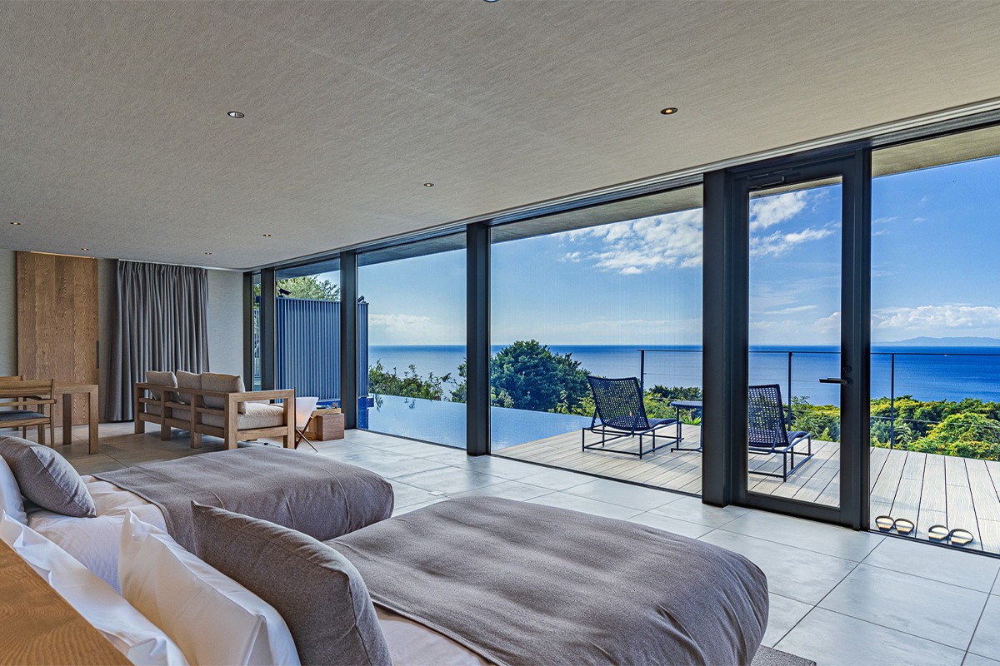
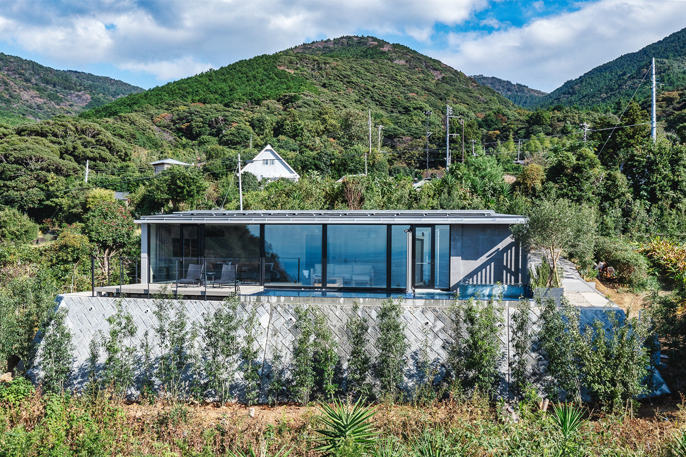
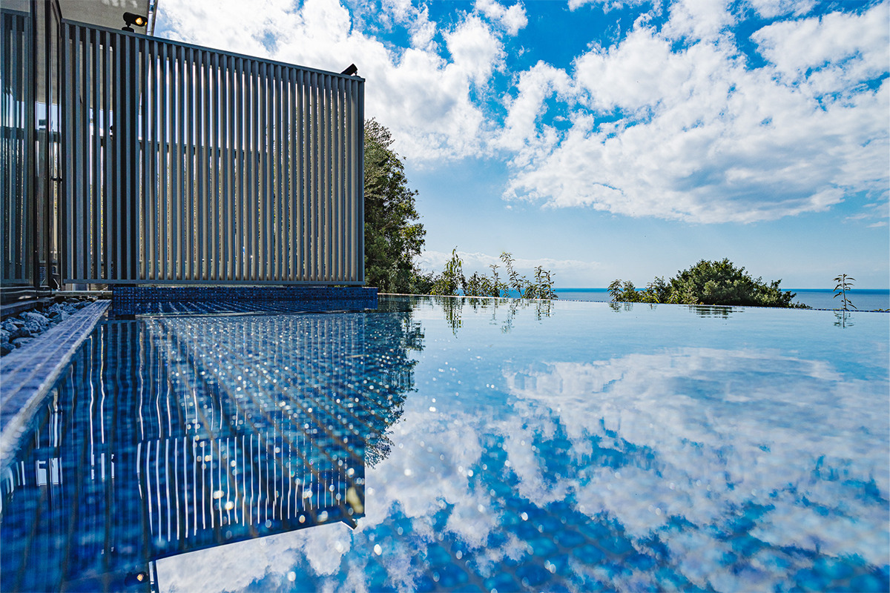
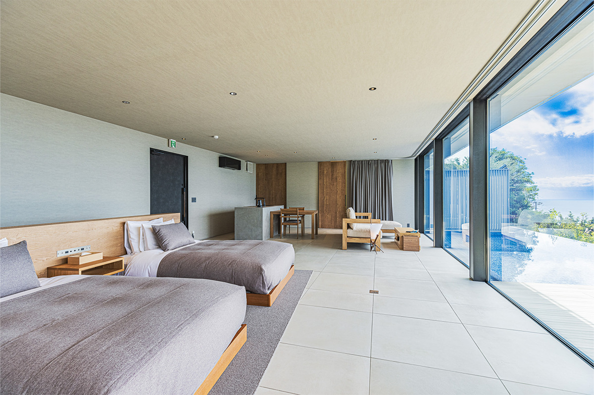
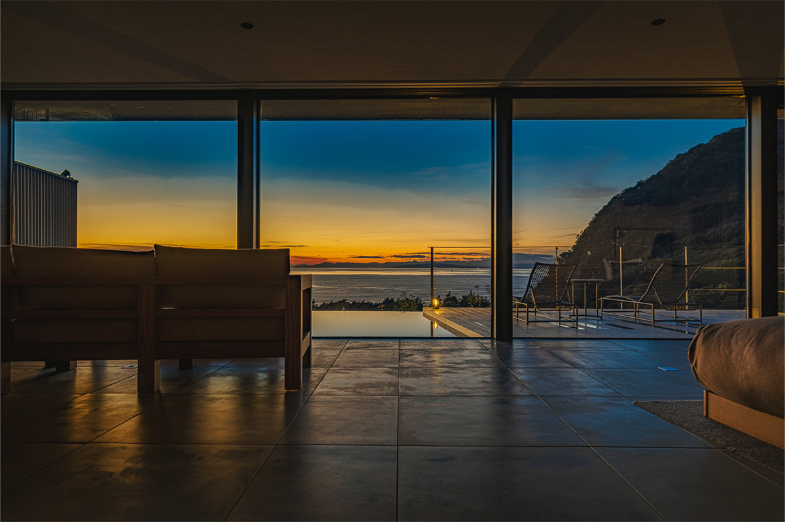
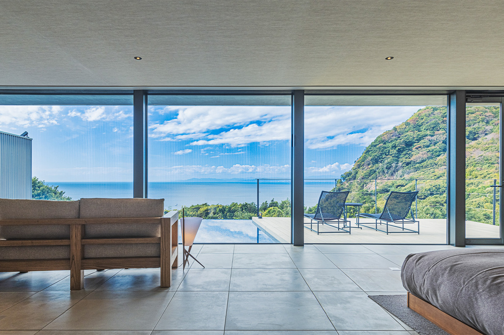
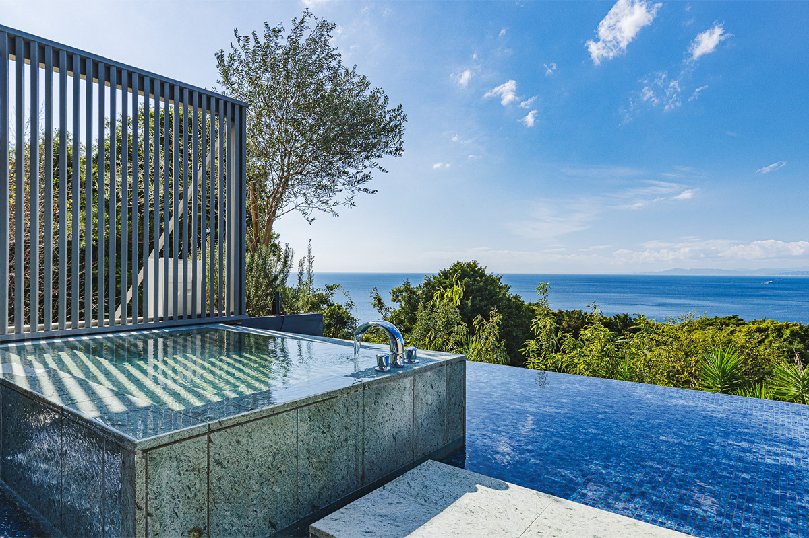
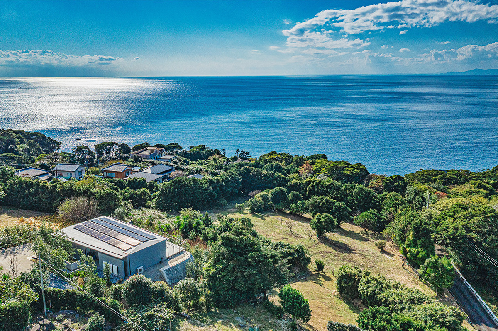

Префектура Сидзуока · Нумадзу, Западный Идзу · где остановиться
WEAZER Nishi-Izu: вилла над заливом Суруга, которая живёт только на энергии солнца и дождя

На склоне над заливом Суруга стоит вилла, которая принимает одну компанию гостей в день. Всю энергию и воду она добывает сама, из солнца и дождя, и при этом в ней нет ничего от походного быта.
Технология
Дом, которому не нужны провода и трубы
WEAZER Nishi-Izu стоит на Западном Идзу, на гористом берегу полуострова Идзу, обращённом к заливу Суруга. Вокруг лес, впереди море. Жить здесь можно так же, как в обычном доме, только всё электричество, газ и вода берутся из природы. Это стало возможным благодаря WEAZER, жилому модулю, который разработала японская компания ARTH.
Модуль автономен: он не подключён ни к электросети, ни к водопроводу и обеспечивает себя сам. Ток дают солнечные панели, дождевую воду собирают, фильтруют и обеззараживают. Раз энергия своя, выбросов CO2 нет. Сточных вод тоже нет: их очищает специальная установка, поэтому дом не вредит месту, где стоит.

С таким модулем удобно жить почти в любой точке планеты, даже там, куда раньше было не добраться с коммуникациями. ARTH собирается делать на его основе отели, загородные дома и убежища на случай бедствий и ставить их в красивых природных местах по всему миру.

Номер
Море, закат и звёзды из одного окна
Гостей встречает личный консьерж. Номер один, одноэтажный, площадью 76 квадратных метров. Большие окна открывают его к заливу Суруга, а интерьер собран из дерева, поэтому внутри спокойно и тепло.

Вечером солнце садится прямо в залив, ночью над домом высыпают звёзды, а утром море блестит на свету. Такие виды есть только здесь, и за один день их сменяется несколько.


Терраса окружена лесом. На ней есть открытая ванна и дневная кровать. Со стороны моря устроен неглубокий бассейн с водной гладью, и из номера кажется, что дом плывёт по заливу.

Ужинают в LOQUAT Nishi-Izu, который открылся в феврале 2022 года. Там подают итальянский ужин из нескольких блюд, приготовленных из продуктов Западного Идзу, и вина, отобранные к ним.

WEAZER Nishi-Izu
- Адрес
- префектура Сидзуока, Нумадзу, Хэда, 2592-1
- Телефон
- +81 558-79-3172
- Номера
- 1